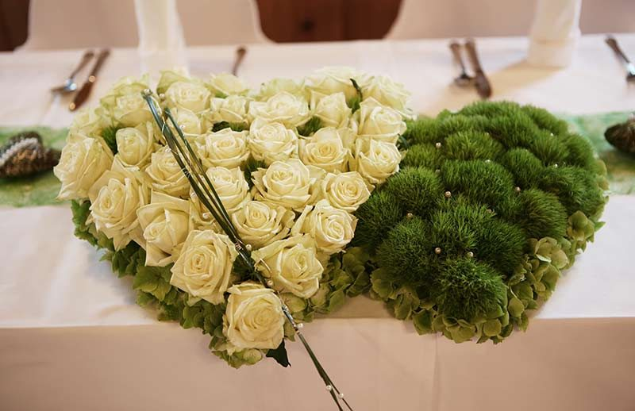

Feiern Sie die Feste, wie sie fallen
Ein Jubiläum mit Freunden, eine gesellige Vereinsfeier, kulturelle Veranstaltungen, Ihr ganz privates Fest oder Ihre stimmungsvolle Weihnachtsfeier – hier finden Sie garantiert das richtige Ambiente zum Feiern und Genießen.
Unsere Kapazitäten
Für jeden Anlass das richtige Ambiente – von der kleinen Runde im Ratsherrenkeller bis zur Hochzeit mit 450 Gästen in der Wösner Tenne.
Wir beraten Sie gerne bei der Menüauswahl und sind Ihnen auch beim Rahmenprogramm oder bei der Musik behilflich. Herzlichst, Ihr Wösner-Team.
Ihr schönster Tag in der Wösner-Tenne
Dieses besondere Ereignis verlangt nach besonderer Aufmerksamkeit – ist es doch ein Ereignis, das unvergesslich ist und immer in Erinnerung bleibt.
Die Wösner-Tenne bietet mit verschiedenen Tischstellungen und Raumabtrennungen, Hussen, unserer Stiegl-Raucherlounge und vielem mehr das stilvolle, romantische Ambiente für Ihr Fest bis zu 450 Gästen. Vom Sektempfang im Hopfengartl über das feierliche Wunschmenü, den Hochzeitstanz und das „Brautstehlen“ – wir bieten, was Ihr Herz begehrt, mit herzlichem Service.
Am Hochzeitstag verwöhnen wir Sie mit dem ausgewählten Hochzeitsmenü und garantieren mit unserem herzlichen, unaufdringlichen Service einen reibungslosen Ablauf.
Für nähere Auskünfte kontaktieren Sie uns bitte unter +43 7716 7240. Bei uns wird Ihre Hochzeit zum Fest Ihres Lebens. — Ihre Familie Wösner
Gänge-Menüs und Buffet
Gerne stellen wir Ihnen mehrgängige Menüs zusammen, oder Sie entscheiden sich für eines unserer Themen-Buffets. Sie können Ihr Hochzeitsmenü auch ganz nach Ihren Wünschen individuell zusammenstellen.
- Festlich gedeckter Tisch mit Papierservietten, Besteck, Wein- und Wasserglas – gratis (Stoffservietten gegen Aufpreis)
- Vegetarische und vegane Speisen sowie Kindergerichte in allen Buffet- und Menüvariationen
- Jause am Abend oder Mitternachtsimbiss, wenn die Feier länger dauert
- Persönliches Planungsgespräch für das perfekte Menü
Wir haben schon einige Angebote zusammengestellt – für individuelle Wünsche sind wir jederzeit offen.
Wo bei uns gefeiert wird
Gartenpartys im Hopfengartl
Wenn Sie im Sommer im Freien feiern möchten, nutzen Sie gerne unser Hopfengartl. Teilweise überdacht, mit Ausblick über die Dächer von Münzkirchen, bietet es eine romantische Ergänzung zu Ihrem Festsaal – und wenn es abends kühl wird, lässt es sich mit Strahlern beheizen.
Restaurant
Wenn Sie in kleinerem Rahmen feiern möchten, empfehlen wir unser Restaurant: hell, freundlich und mit einladendem Ambiente – ein besonderes Flair zum Feiern und Genießen.
Modern und traditionell zugleich
Für jeden sein Platzerl zum Wohlfühlen: Die gemütliche Gaststube mit Kaminstüberl ist das Herz des Gasthofes. Das Restaurant wurde 2010 umgebaut und mit warmen, freundlichen Farben gestaltet.
Was bei uns gefeiert wird
- Hochzeiten
- Familienfeiern und Taufen
- Geburtstage
- Klassentreffen
- Firmen- und Weihnachtsfeiern
- Vereinsfeiern und kulturelle Veranstaltungen
- Dinner for two
Gastlichkeit mit Flair
Schon in der fünften Generation verwöhnen wir unsere Gäste mit Speis und Trank. Im Gasthof Wösner wird seit jeher gefeiert und getanzt – in der Wösner Tenne hat schon so manches Pärchen Hochzeit gehalten.
Der Treffpunkt
Im Gasthof trifft sich regelmäßig der örtliche Stammtisch, wo Jung und Alt in geselliger Runde beinand’ sitzen, um Geschichten zu erzählen, „a Gaudi“ zu haben oder eine Runde zu „karteln“. Die zeitgeistige Bar hat nur in den Wintermonaten geöffnet.
Was Gäste über ihre Feier sagen
Rückmeldungen von der bestehenden Website des Gasthofs.
„Hatten eine großartige Hochzeitsfeier mit 200 Gästen & dazu habt ihr einen riesengroßen Beitrag geleistet. Wir bedanken uns … für die tolle Bewirtung, den raschen, zuvorkommenden Service, das traumhafte Essen. Ihr seid top organisiert, … ihr habt definitiv Erfahrung & wisst, auf was es an solch einem besonderen Tag ankommt. Danke an das gesamte Team, ihr seid spitze!“
Lisa & Chris.„Essen war sehr gut, Bedienung schnell und äußerst nett.“
Margit S.„Bestes Wirtshaus, sehr zum empfehlen. Nettes Personal, gutes Essen.“
Lorenzo M.„Waren hier Heute am 1. Weihnachtsfeiertag 2019 mit der Familie essen. Die Speisen waren durchwegs sensationell lecker und auch perfekt angerichtet.“
Julia H.„Bestes Essen und bester Service!“
Lukas S.„Perfektes Essen und Top Service – waren total begeistert.“
Renate F.„Sehr schöner Gasthof, traumhaft gute ‚Sauwald Brettljause‘.“
Heinrich P.„Junges kreatives Team, gute Auswahl an Speisen, gutes Essen, hervorragende Atmosphäre, highly recommend.“
Engelbert H.„Preis-Leistungsverhältnis passt. Wirklich sehr gute Küche und angenehmes Ambiente.“
Irene W.
Feier oder Hochzeit anfragen
Sagen Sie uns Anlass, Datum und Gästezahl – wir melden uns mit Raumvorschlag und Menüideen zurück.